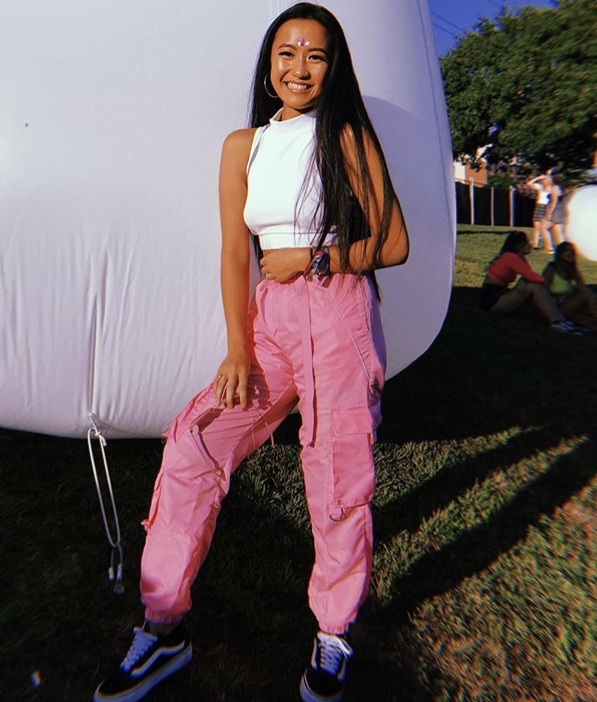

My name is Allison Vang. I am a freshman that hopes to declare a major in Computer Science and a minor in Sustainablity and Leadership Studies. I hope to bridge the gap of technology and the environment by creating or being apart of innovative tech that will help solve major environmental issues such as waste management and climate change.
I am originally from the Midwest and was born in Illinois but moved to Rhode Island at a young age. I have one younger sister, Emily who is eleven years old. I enjoy playing piano, traveling and reading. I have been to over ten countries and would love to continue traveling later in life. I also help my grandparents with the selling of their organic vegetbales and eggs at local farmers markets.